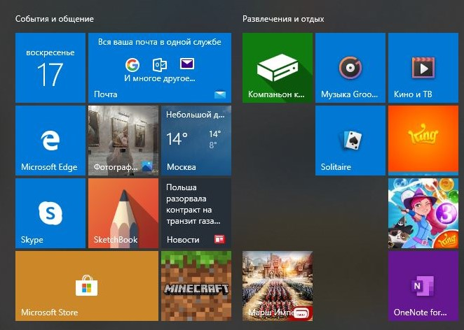

Flat Design (Плоский дизайн)
Плоский дизайн — минималистичный дизайн, который подчеркивает прежде всего удобство для пользователя. Это показывает чистое, открытое пространство, четкие края, яркие цвета и двумерные иллюстрации.
ПодробнееFlat Design изначально был разработан для адаптивного дизайна, когда контент веб-сайта плавно масштабируется в зависимости от размера экрана устройства. Благодаря использованию простых форм и минимальных текстур плоский дизайн гарантирует, что адаптивные проекты работают хорошо и загружаются быстро (особенно важно, поскольку мобильные устройства имеют более низкую скорость интернета). Уменьшая количество визуального шума (в виде текстур и теней), плоский дизайн предоставляет пользователям оптимизированный и более оптимальный пользовательский интерфейс.
Microsoft была одной из первых компаний, которая применила этот стиль дизайна к своему интерфейсу, что, по мнению некоторых, отрицательно сказалось на популярном в то время дизайне, который Apple выпустила с помощью интерфейса iOS. Вместо преобразования реального объекта, например такого как календарь, в крошечную реалистичную иллюстрацию, сторонники Flat Design идентифицируют приложения с помощью простых, похожих на значки изображений.
Тем не менее, несмотря на свою популярность, Flat Design также имеет недостатки, касающиеся пользовательского интерфейса. Отсутствие трехмерных эффектов (например, теней) убирает подсказки, которые указывают, как пользователь может взаимодействовать с дизайном. Например, кнопки в стиле плоского дизайна не отображаются отдельно от других визуальных элементов на веб-странице и, следовательно, не выглядят активными. Из-за этого существенного минуса плоский дизайн все чаще применяется более сбалансированным образом, часто называемым «плоский дизайн 2.0» или «почти плоский дизайн». Эта тенденция берет чистые и простые визуальные эффекты от плоского дизайна и добавляет некоторые "фишки", такие как цветовые вариации и тени. С такой глубиной и размерами увеличивается визуальное разнообразие и улучшается удобство использования. Например, Google Material Design и Apple iOS-интерфейсы интенсивно используют тени и/или размытие, чтобы сделать их интерфейсы более интуитивно понятными в использовании.
Flat Design работает лучше всего, когда вы думаете о потребностях ваших пользователей, вместо того, чтобы делать чисто визуальный контент. Независимо от того, полностью ли вы отказываетесь от эффектов или добавляете тонкие тени и цветовые градиенты, плоский дизайн должен в конечном итоге улучшить пользовательский интерфейс.
Принципы использования плоского дизайна
Выберите правильные шрифты: чтобы придерживаться минималистского подхода плоского дизайна, выберите шрифты без засечек. У шрифтов с засечками есть тонкая линия, прикрепленная к концу каждого элемента, который добавляет ненужное художественное оформление.
Используйте контрастность в своих интересах: используйте яркую цветовую палитру плоского дизайна, чтобы текст был четким и заметным. Например, светло-серый шрифт на темно-сером фоне популярен в плоском дизайне, но его трудно прочитать. Вместо этого выберите жирный шрифт на более светлом фоне.
Связать элементы.При отсутствие трехмерных эффектов, указывающих на нажатие кнопок, вам необходимо связать элементы так, чтобы пользователи не обнаружили для себя никаких проблем. Например, если у вас есть несколько миниатюрных изображений, находящихся рядом друг с другом, все эти элементы должны вести на одну и ту же страницу.